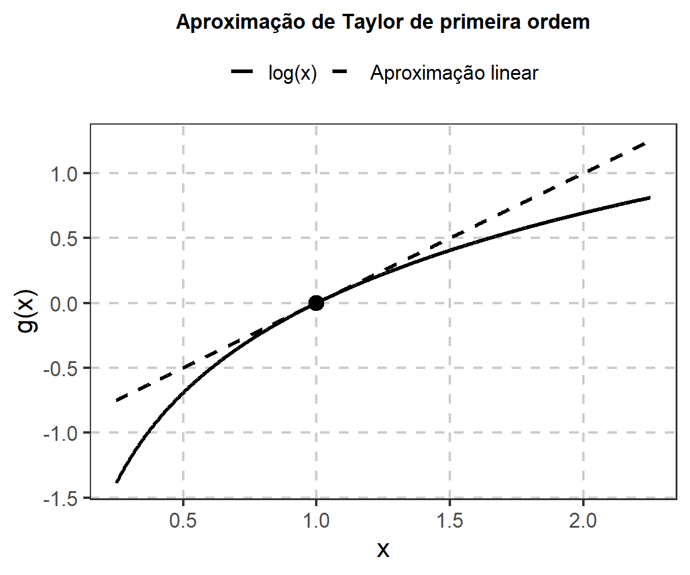
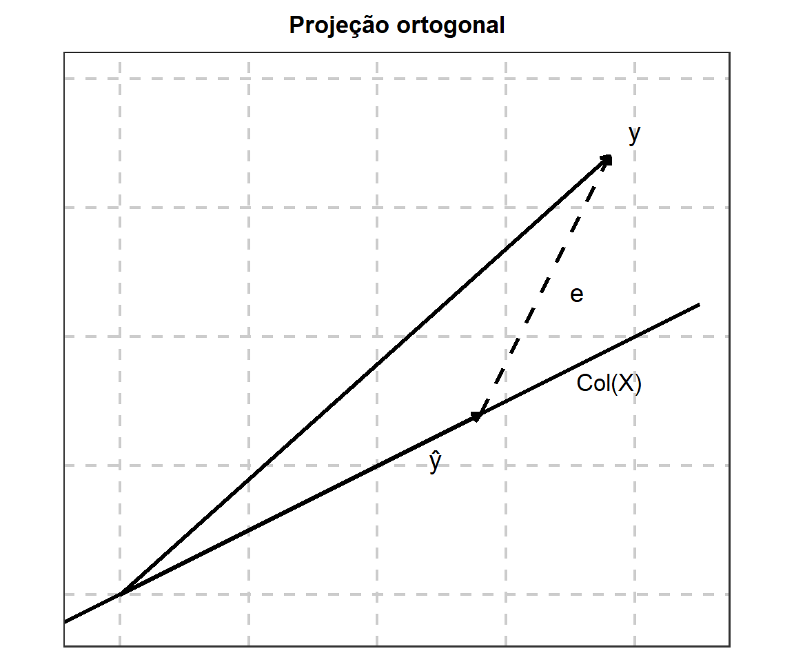
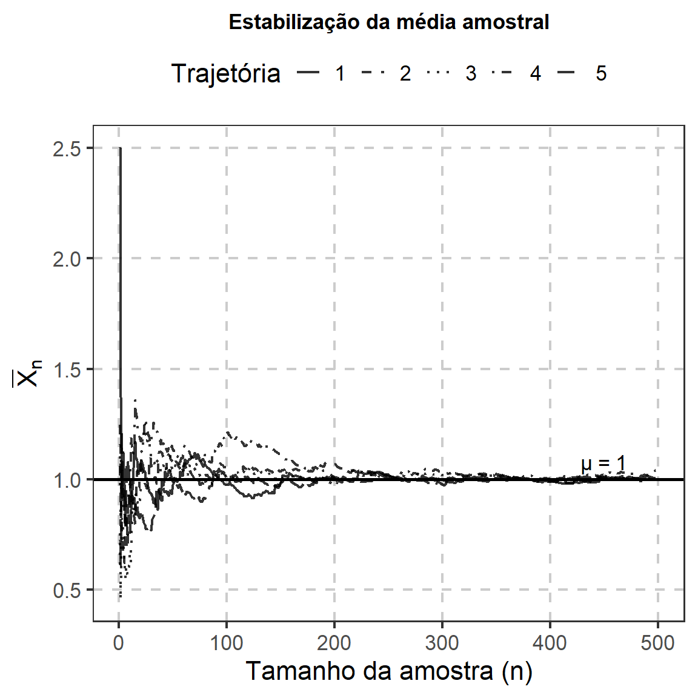
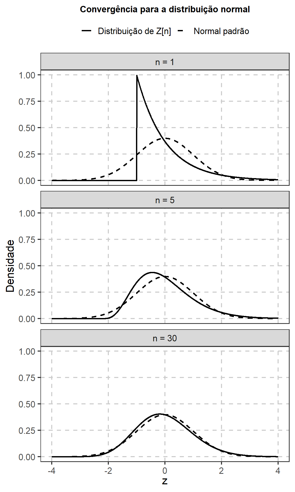
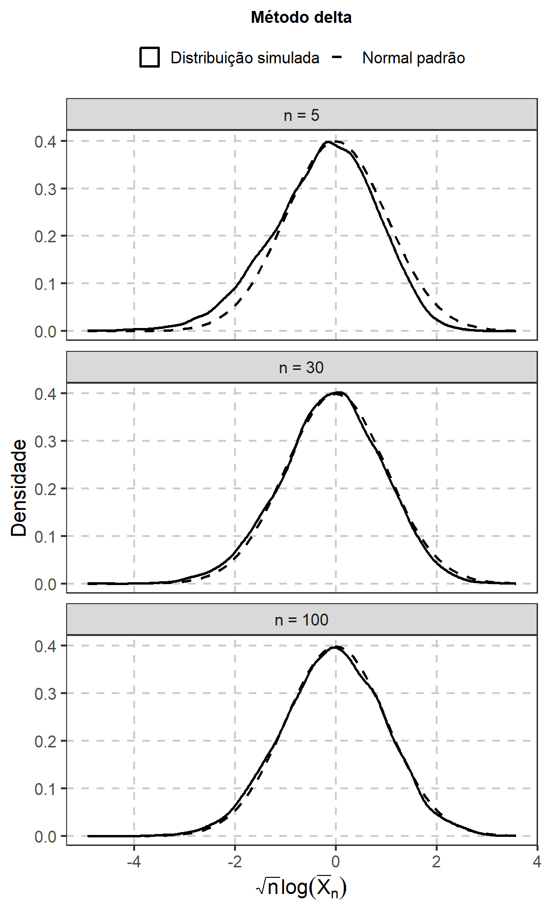

Resultados Matemáticos e Assintóticos para Inferência
Este capítulo reúne ferramentas matemáticas e assintóticas que serão utilizadas ao longo do estudo de Inferência Estatística. O objetivo é estabelecer uma base comum de notação e revisar resultados de cálculo, álgebra linear e teoria assintótica necessários para estudar distribuições amostrais, propriedades de estimadores, métodos de estimação, intervalos de confiança e testes de hipóteses (Rice, 2007, caps. 1–6; Ramachandran; Tsokos, 2021, caps. 2–4; Lauritzen, 2023, ap. A).
No capítulo anterior, a atenção esteve concentrada na linguagem da Probabilidade: variáveis aleatórias, distribuições, momentos, dependência, transformações e modelos probabilísticos. A partir deste capítulo, passamos a reunir ferramentas utilizadas para manipular esses modelos matematicamente e para estudar o comportamento de estatísticas quando o tamanho da amostra aumenta.
A primeira parte revisa operações com somatórios e produtos, diferenciação, expansões de Taylor, vetores, matrizes, formas quadráticas, projeções e transformações multivariadas. A segunda introduz a linguagem assintótica utilizada posteriormente para estudar consistência, distribuições limites, normalidade assintótica e aproximações de funções de estimadores.
NotaDelimitação do capítulo
Os resultados apresentados neste capítulo serão utilizados como ferramentas matemáticas. Suas aplicações estatísticas completas serão desenvolvidas nos capítulos correspondentes.
Em particular:
- a Lei Fraca dos Grandes Números e o Teorema Central do Limite serão estabelecidos aqui, enquanto suas consequências para distribuições amostrais serão estudadas no capítulo Distribuições Amostrais;
- o método delta será apresentado como consequência de uma expansão de Taylor e aplicado posteriormente a estimadores e funções de parâmetros;
- gradientes e matrizes hessianas serão definidos aqui e utilizados depois em funções de verossimilhança, funções escore e informação;
- formas quadráticas e projeções serão retomadas quando surgirem em distribuições associadas ao modelo normal e em métodos de mínimos quadrados.
O objetivo não é desenvolver novamente cursos completos de Cálculo ou Álgebra Linear, mas registrar os resultados necessários para os desenvolvimentos inferenciais do livro.
Mapa de dependências
As ferramentas deste capítulo reaparecerão em diferentes partes do livro. O quadro seguinte resume suas principais conexões.
| Ferramenta | Utilização posterior |
|---|---|
| Somatórios, produtos e logaritmos | verossimilhança, log-verossimilhança e funções construídas a partir de amostras |
| Diferenciação | otimização, função escore e informação |
| Expansões de Taylor | método delta, aproximações e propriedades assintóticas |
| Vetores e matrizes | parâmetros vetoriais, covariâncias, informação e modelos lineares |
| Formas quadráticas | distribuições associadas ao modelo normal, somas de quadrados e estatísticas inferenciais |
| Projeções | mínimos quadrados e decomposição da variabilidade |
| Transformações multivariadas e jacobiano | obtenção de distribuições e mudanças de variáveis |
| Modos de convergência | consistência e aproximações assintóticas |
| Lei Fraca dos Grandes Números | médias e momentos amostrais, consistência |
| Teorema Central do Limite | aproximações normais e normalidade assintótica |
| Mapeamento contínuo | transformação de sequências convergentes |
| Lema de Slutsky | combinação de limites e substituição de quantidades desconhecidas |
| Método delta | distribuição assintótica de funções de estatísticas |
| Ordens estocásticas | representação de taxas, erros e termos de resto |
Notação e ferramentas de cálculo
Diversos desenvolvimentos inferenciais podem ser expressos de forma compacta por meio de somatórios, produtos, logaritmos e derivadas. Essas operações aparecerão repetidamente quando uma estatística for construída a partir de uma amostra ou quando uma função de vários parâmetros precisar ser analisada.
Somatórios e produtos
Para uma sequência
\[ a_1,\ldots,a_n, \]
utilizaremos a notação
\[ \sum_{i=1}^n a_i = a_1+\cdots+a_n \]
para representar sua soma e
\[ \prod_{i=1}^n a_i = a_1\cdots a_n \]
para representar seu produto.
Algumas propriedades dos somatórios serão utilizadas repetidamente. Para constantes \(a\), \(b\) e \(c\),
\[ \sum_{i=1}^n (ax_i+by_i) = a\sum_{i=1}^n x_i + b\sum_{i=1}^n y_i \]
e
\[ \sum_{i=1}^n c = nc. \]
A média aritmética de
\[ x_1,\ldots,x_n \]
é
\[ \overline x = \frac{1}{n} \sum_{i=1}^n x_i. \]
Uma propriedade útil é
\[ \sum_{i=1}^n (x_i-\overline x) = 0. \]
De fato,
\[ \sum_{i=1}^n (x_i-\overline x) = \sum_{i=1}^n x_i - n\overline x = 0. \]
Essa identidade permite obter uma decomposição que será utilizada posteriormente em somas de quadrados. Para qualquer constante \(a\),
\[ x_i-a = (x_i-\overline x) + (\overline x-a). \]
Elevando ao quadrado e somando,
\[ \sum_{i=1}^n(x_i-a)^2 = \sum_{i=1}^n(x_i-\overline x)^2 + 2(\overline x-a) \sum_{i=1}^n(x_i-\overline x) + n(\overline x-a)^2. \]
Como
\[ \sum_{i=1}^n(x_i-\overline x)=0, \]
obtemos
\[ \boxed{ \sum_{i=1}^n(x_i-a)^2 = \sum_{i=1}^n(x_i-\overline x)^2 + n(\overline x-a)^2. } \]
A expressão decompõe a soma dos quadrados dos desvios em relação a um valor arbitrário \(a\) em duas parcelas: a variação em torno da média e a distância entre \(\overline x\) e \(a\).
Muitas estatísticas utilizadas posteriormente possuem a forma de uma soma ou de uma média. Por exemplo,
\[ \overline X_n = \frac{1}{n} \sum_{i=1}^nX_i \]
é uma função das \(n\) observações da amostra.
Da mesma forma, uma soma de quadrados como
\[ \sum_{i=1}^n (X_i-\overline X_n)^2 \]
será utilizada para descrever a variabilidade das observações.
A notação de somatório permite escrever essas estatísticas sem depender de um valor específico de \(n\).
Produtos e logaritmos
Produtos aparecem naturalmente quando várias contribuições individuais são combinadas. Uma transformação particularmente útil nesses casos é o logaritmo.
Para
\[ a_i>0, \qquad i=1,\ldots,n, \]
temos
\[ \log \left( \prod_{i=1}^n a_i \right) = \sum_{i=1}^n \log a_i. \]
Além disso,
\[ \log(a^b) = b\log a, \qquad a>0. \]
Outra propriedade frequentemente utilizada é
\[ \log\left(\frac{a}{b}\right) = \log a-\log b, \qquad a,b>0. \]
Como o logaritmo natural é uma função estritamente crescente,
\[ a<b \quad\Longleftrightarrow\quad \log a<\log b \]
para valores positivos. Consequentemente, maximizar uma função positiva é equivalente a maximizar seu logaritmo.
Quando observações independentes contribuem multiplicativamente para uma função, pode surgir uma expressão da forma
\[ L(\theta) = \prod_{i=1}^n f(x_i\mid\theta). \]
Aplicando o logaritmo,
\[ \ell(\theta) = \log L(\theta) = \sum_{i=1}^n \log f(x_i\mid\theta). \]
Assim, um produto com \(n\) fatores é convertido em uma soma com \(n\) parcelas.
Essa transformação será utilizada posteriormente na passagem da função de verossimilhança para a log-verossimilhança.
Diferenciação
A diferenciação permite estudar como uma função varia quando seus argumentos são modificados. Em Inferência Estatística, derivadas aparecem em problemas de otimização, aproximações locais e análise da sensibilidade de funções em relação aos parâmetros.
Funções de uma variável
Considere uma função diferenciável
\[ g:\mathbb R\longrightarrow\mathbb R. \]
A derivada de \(g\) em \(x\) é
\[ g'(x) = \frac{d}{dx}g(x). \]
Geometricamente, \(g'(x)\) representa a inclinação da reta tangente ao gráfico de \(g\) no ponto considerado.
Se \(x_0\) é um ponto interior do domínio e \(g\) apresenta um extremo local diferenciável em \(x_0\), então uma condição necessária é
\[ g'(x_0)=0. \]
Um ponto que satisfaz essa igualdade é denominado ponto crítico.
A derivada de segunda ordem auxilia na classificação desse ponto. Se
\[ g'(x_0)=0 \]
e
\[ g''(x_0)<0, \]
então \(x_0\) é um máximo local. Se
\[ g''(x_0)>0, \]
então \(x_0\) é um mínimo local.
Quando
\[ g''(x_0)=0, \]
o teste da segunda derivada é inconclusivo.
NotaExtremos na fronteira
A condição
\[ g'(x_0)=0 \]
é uma condição para extremos interiores.
Quando o domínio possui fronteiras, o máximo ou o mínimo pode ocorrer em um ponto no qual a derivada não é zero ou nem sequer está definida como derivada bilateral.
Essa distinção será relevante em alguns problemas de estimação nos quais o espaço paramétrico possui restrições.
Funções de várias variáveis
Considere agora uma função escalar
\[ g:\mathbb R^k\longrightarrow\mathbb R \]
e um vetor de argumentos
\[ \boldsymbol\theta = (\theta_1,\ldots,\theta_k)^\mathsf T. \]
As derivadas parciais de primeira ordem são reunidas no gradiente,
\[ \nabla g(\boldsymbol\theta) = \begin{pmatrix} \dfrac{\partial g}{\partial\theta_1}\\[6pt] \vdots\\[6pt] \dfrac{\partial g}{\partial\theta_k} \end{pmatrix}. \]
O gradiente descreve a variação local de \(g\) em relação a todas as componentes de \(\boldsymbol\theta\).
As derivadas de segunda ordem são reunidas na matriz hessiana,
\[ \nabla^2g(\boldsymbol\theta) = \left[ \frac{\partial^2g} {\partial\theta_i\partial\theta_j} \right]_{i,j=1}^k. \]
Explicitamente,
\[ \nabla^2g(\boldsymbol\theta) = \begin{pmatrix} \dfrac{\partial^2g}{\partial\theta_1^2} & \cdots & \dfrac{\partial^2g} {\partial\theta_1\partial\theta_k} \\[8pt] \vdots & \ddots & \vdots \\[8pt] \dfrac{\partial^2g} {\partial\theta_k\partial\theta_1} & \cdots & \dfrac{\partial^2g}{\partial\theta_k^2} \end{pmatrix}. \]
Quando as derivadas parciais de segunda ordem são contínuas em uma vizinhança do ponto considerado, as derivadas cruzadas coincidem,
\[ \frac{\partial^2g} {\partial\theta_i\partial\theta_j} = \frac{\partial^2g} {\partial\theta_j\partial\theta_i}, \]
e a matriz hessiana é simétrica.
Considere
\[ g(\theta_1,\theta_2) = \theta_1^2 + \theta_1\theta_2 + \theta_2^2. \]
O gradiente é
\[ \nabla g(\theta_1,\theta_2) = \begin{pmatrix} 2\theta_1+\theta_2\\ \theta_1+2\theta_2 \end{pmatrix}. \]
A matriz hessiana é
\[ \nabla^2g(\theta_1,\theta_2) = \begin{pmatrix} 2 & 1\\ 1 & 2 \end{pmatrix}. \]
Nesse exemplo, a hessiana não depende do ponto em que é avaliada.
Um modelo pode depender de mais de um parâmetro. Na distribuição normal, por exemplo, podemos organizar
\[ \boldsymbol\theta = \begin{pmatrix} \mu\\ \sigma^2 \end{pmatrix}. \]
Quando uma função
\[ \ell(\boldsymbol\theta) \]
depender simultaneamente desses parâmetros, seu gradiente reunirá as derivadas de primeira ordem,
\[ \nabla\ell(\boldsymbol\theta), \]
enquanto a hessiana reunirá as derivadas de segunda ordem,
\[ \nabla^2\ell(\boldsymbol\theta). \]
Essas estruturas serão utilizadas posteriormente na função escore, na informação observada e em aproximações locais de funções inferenciais.
Fórmula de Taylor
A fórmula de Taylor permite representar localmente uma função por meio de um polinômio construído a partir de suas derivadas.
Na Inferência Estatística, a ideia principal não é substituir permanentemente uma função por uma série infinita. O interesse está em utilizar aproximações locais com termos de resto controlados.
Aproximação de primeira ordem
Se \(g\) é diferenciável em \(a\), então
\[ g(x) = g(a) + g'(a)(x-a) + o(|x-a|), \qquad x\to a. \]
Assim, para \(x\) suficientemente próximo de \(a\),
\[ g(x) \approx g(a) + g'(a)(x-a). \]
A expressão à direita corresponde à reta tangente ao gráfico de \(g\) no ponto
\[ (a,g(a)). \]
O termo
\[ o(|x-a|) \]
representa um erro que se torna desprezível em relação a \(|x-a|\) quando
\[ x\to a. \]
Considere
\[ g(x)=\log x. \]
Em torno de
\[ a=1, \]
temos
\[ g(1)=0 \]
e
\[ g'(1)=1. \]
Portanto,
\[ \log x = (x-1) + o(|x-1|), \qquad x\to1. \]
Em primeira ordem,
\[ \boxed{ \log x \approx x-1 } \]
para valores de \(x\) próximos de \(1\).
A Figura 1 mostra que a aproximação linear coincide com a função no ponto
\[ x=1 \]
e acompanha seu comportamento em uma vizinhança desse ponto. À medida que \(x\) se afasta de \(1\), a diferença entre a função e sua aproximação aumenta.
Esse caráter local da aproximação é o aspecto que será utilizado nos resultados assintóticos: quando uma sequência de estatísticas se aproxima de determinado valor, uma função dessas estatísticas pode ser aproximada por sua expansão de Taylor em torno do valor limite.
Aproximação de segunda ordem
Se \(g\) possui segunda derivada contínua em uma vizinhança de \(a\), então
\[ g(x) = g(a) + g'(a)(x-a) + \frac{1}{2} g''(a)(x-a)^2 + o\{(x-a)^2\}, \qquad x\to a. \]
Assim, a aproximação de segunda ordem é
\[ g(x) \approx g(a) + g'(a)(x-a) + \frac{1}{2} g''(a)(x-a)^2. \]
Enquanto a aproximação de primeira ordem utiliza apenas a inclinação local, a aproximação de segunda ordem incorpora também a curvatura da função.
Uma forma equivalente, utilizando o resto de Lagrange, é
\[ g(x) = g(a) + g'(a)(x-a) + \frac{1}{2} g''(\widetilde x)(x-a)^2, \]
em que \(\widetilde x\) está entre \(a\) e \(x\), sob as condições usuais para o resultado.
Expansões de Taylor aparecerão posteriormente em diferentes situações.
Se uma estatística \(T_n\) se aproxima de \(\theta\), então uma função \(g(T_n)\) pode ser aproximada por
\[ g(T_n) \approx g(\theta) + g'(\theta)(T_n-\theta). \]
Essa é a ideia utilizada pelo método delta.
De forma semelhante, uma função inferencial \(\ell(\theta)\) pode ser aproximada localmente em torno de um valor \(\theta_0\) por
\[ \ell(\theta) \approx \ell(\theta_0) + \ell'(\theta_0)(\theta-\theta_0) + \frac{1}{2} \ell''(\theta_0)(\theta-\theta_0)^2. \]
Expansões desse tipo serão utilizadas posteriormente para estudar funções de verossimilhança e propriedades assintóticas de estimadores.
Taylor em várias dimensões
A mesma ideia se estende a funções de vetores.
Considere
\[ g:\mathbb R^k\longrightarrow\mathbb R \]
diferenciável em
\[ \boldsymbol\xi\in\mathbb R^k. \]
Para \(\mathbf x\) próximo de \(\boldsymbol\xi\),
\[ g(\mathbf x) = g(\boldsymbol\xi) + \nabla g(\boldsymbol\xi)^\mathsf T (\mathbf x-\boldsymbol\xi) + o \left( \|\mathbf x-\boldsymbol\xi\| \right). \]
A aproximação de primeira ordem é, portanto,
\[ g(\mathbf x) \approx g(\boldsymbol\xi) + \nabla g(\boldsymbol\xi)^\mathsf T (\mathbf x-\boldsymbol\xi). \]
Se \(g\) possui derivadas de segunda ordem adequadamente regulares, a aproximação de segunda ordem pode ser escrita como
\[ g(\mathbf x) \approx g(\boldsymbol\xi) + \nabla g(\boldsymbol\xi)^\mathsf T (\mathbf x-\boldsymbol\xi) + \frac{1}{2} (\mathbf x-\boldsymbol\xi)^\mathsf T \nabla^2g(\boldsymbol\xi) (\mathbf x-\boldsymbol\xi). \]
O termo
\[ (\mathbf x-\boldsymbol\xi)^\mathsf T \nabla^2g(\boldsymbol\xi) (\mathbf x-\boldsymbol\xi) \]
é uma forma quadrática e incorpora a curvatura da função em diferentes direções.
Funções vetoriais
Considere agora
\[ g:\mathbb R^k\longrightarrow\mathbb R^m, \]
com
\[ g(\mathbf x) = \begin{pmatrix} g_1(\mathbf x)\\ \vdots\\ g_m(\mathbf x) \end{pmatrix}. \]
A matriz de derivadas de primeira ordem é a matriz jacobiana,
\[ Dg(\mathbf x) = \left[ \frac{\partial g_i(\mathbf x)} {\partial x_j} \right]_{ \substack{ i=1,\ldots,m\\ j=1,\ldots,k } }. \]
Para \(\mathbf x\) próximo de \(\boldsymbol\xi\),
\[ g(\mathbf x) = g(\boldsymbol\xi) + Dg(\boldsymbol\xi) (\mathbf x-\boldsymbol\xi) + o \left( \|\mathbf x-\boldsymbol\xi\| \right). \]
Quando
\[ m=1, \]
a jacobiana é um vetor linha e corresponde ao transposto do gradiente segundo a convenção adotada:
\[ Dg(\mathbf x) = \nabla g(\mathbf x)^\mathsf T. \]
NotaGradiente, hessiana e jacobiana
Os três objetos possuem funções distintas:
- o gradiente reúne derivadas de primeira ordem de uma função escalar;
- a hessiana reúne derivadas de segunda ordem de uma função escalar;
- a jacobiana reúne derivadas de primeira ordem de uma função vetorial.
Essa distinção será mantida ao longo do livro.
Suponha que
\[ \mathbf T_n = \begin{pmatrix} T_{1n}\\ T_{2n} \end{pmatrix} \]
se aproxime de
\[ \boldsymbol\theta = \begin{pmatrix} \theta_1\\ \theta_2 \end{pmatrix} \]
e que a quantidade de interesse seja
\[ g(\boldsymbol\theta) = \frac{\theta_1}{\theta_2}. \]
Uma aproximação local de
\[ g(\mathbf T_n) \]
dependerá do gradiente de \(g\),
\[ \nabla g(\theta_1,\theta_2) = \begin{pmatrix} \dfrac{1}{\theta_2}\\[8pt] -\dfrac{\theta_1}{\theta_2^2} \end{pmatrix}. \]
Essa estrutura será utilizada posteriormente no método delta multivariado para obter a distribuição assintótica de funções de estimadores vetoriais (Lauritzen, 2023, ap. A.3.2).
Vetores e matrizes
Muitos resultados inferenciais envolvem várias quantidades simultaneamente. Parâmetros podem ser vetoriais, estatísticas podem ser organizadas em vetores e estruturas de variabilidade podem ser representadas por matrizes.
A notação matricial permite expressar essas relações de forma compacta e será particularmente útil no estudo de parâmetros multidimensionais, distribuições conjuntas, informação de Fisher e modelos lineares.
Vetores e operações
Um vetor coluna em \(\mathbb R^k\) será representado por
\[ \mathbf x = \begin{pmatrix} x_1\\ \vdots\\ x_k \end{pmatrix} = (x_1,\ldots,x_k)^\mathsf T. \]
Seu transposto é o vetor linha
\[ \mathbf x^\mathsf T = (x_1,\ldots,x_k). \]
Para
\[ \mathbf x,\mathbf y\in\mathbb R^k, \]
a soma é realizada componente a componente:
\[ \mathbf x+\mathbf y = \begin{pmatrix} x_1+y_1\\ \vdots\\ x_k+y_k \end{pmatrix}. \]
Para um escalar \(a\),
\[ a\mathbf x = \begin{pmatrix} ax_1\\ \vdots\\ ax_k \end{pmatrix}. \]
Produto interno e norma
O produto interno entre \(\mathbf x\) e \(\mathbf y\) é
\[ \langle\mathbf x,\mathbf y\rangle = \mathbf x^\mathsf T\mathbf y = \sum_{j=1}^k x_jy_j. \]
Dois vetores são ortogonais quando
\[ \mathbf x^\mathsf T\mathbf y=0. \]
A norma euclidiana de \(\mathbf x\) é
\[ \|\mathbf x\| = \sqrt{\mathbf x^\mathsf T\mathbf x} = \sqrt{ \sum_{j=1}^k x_j^2 }. \]
A norma representa o comprimento do vetor no espaço euclidiano.
A distância entre dois vetores pode ser escrita como
\[ \|\mathbf x-\mathbf y\|. \]
Considere dois valores possíveis de um parâmetro vetorial,
\[ \boldsymbol\theta_1 = \begin{pmatrix} \theta_{11}\\ \theta_{12} \end{pmatrix} \]
e
\[ \boldsymbol\theta_2 = \begin{pmatrix} \theta_{21}\\ \theta_{22} \end{pmatrix}. \]
A quantidade
\[ \|\boldsymbol\theta_1-\boldsymbol\theta_2\| \]
mede a distância euclidiana entre esses dois pontos no espaço paramétrico.
Em resultados assintóticos, expressões como
\[ \|\mathbf T_n-\boldsymbol\theta\| \to0 \]
serão utilizadas para representar a aproximação de uma estatística vetorial ao parâmetro que ela estima.
Matrizes
Uma matriz com \(m\) linhas e \(k\) colunas será representada por
\[ \mathbf A = [a_{ij}] \in \mathbb R^{m\times k}. \]
Sua transposta,
\[ \mathbf A^\mathsf T, \]
possui dimensão
\[ k\times m. \]
Para matrizes compatíveis,
\[ (\mathbf A\mathbf B)^\mathsf T = \mathbf B^\mathsf T\mathbf A^\mathsf T. \]
Matriz identidade e inversa
A matriz identidade de ordem \(k\) é
\[ \mathbf I_k = \begin{pmatrix} 1 & 0 & \cdots & 0\\ 0 & 1 & \cdots & 0\\ \vdots & \vdots & \ddots & \vdots\\ 0 & 0 & \cdots & 1 \end{pmatrix}. \]
Quando a dimensão estiver clara pelo contexto, escreveremos simplesmente
\[ \mathbf I. \]
Uma matriz quadrada \(\mathbf A\) é invertível quando existe uma matriz
\[ \mathbf A^{-1} \]
tal que
\[ \mathbf A^{-1}\mathbf A = \mathbf A\mathbf A^{-1} = \mathbf I. \]
Matrizes simétricas
Uma matriz quadrada \(\mathbf A\) é simétrica quando
\[ \mathbf A^\mathsf T = \mathbf A. \]
Matrizes de covariâncias e matrizes hessianas sob condições adequadas são exemplos importantes de matrizes simétricas que aparecerão ao longo do livro.
Posto e independência linear
O posto de uma matriz corresponde ao número máximo de colunas, ou equivalentemente de linhas, linearmente independentes.
Considere
\[ \mathbf X \in \mathbb R^{n\times p}. \]
Se
\[ \operatorname{posto}(\mathbf X)=p, \]
dizemos que \(\mathbf X\) possui posto completo nas colunas.
Nesse caso, suas \(p\) colunas são linearmente independentes.
Quando
\[ n\geq p \]
e \(\mathbf X\) possui posto completo nas colunas,
\[ \mathbf X^\mathsf T\mathbf X \]
é invertível.
Em modelos lineares, as observações podem ser organizadas em um vetor
\[ \mathbf y \in \mathbb R^n, \]
enquanto as variáveis explicativas são organizadas em uma matriz
\[ \mathbf X \in \mathbb R^{n\times p}. \]
A condição
\[ \operatorname{posto}(\mathbf X)=p \]
garante que as colunas de \(\mathbf X\) não apresentam dependência linear exata.
Sob essa condição,
\[ \mathbf X^\mathsf T\mathbf X \]
é invertível e expressões como
\[ (\mathbf X^\mathsf T\mathbf X)^{-1} \]
podem ser utilizadas no método de mínimos quadrados.
Formas quadráticas
Considere uma matriz simétrica
\[ \mathbf A \in \mathbb R^{k\times k} \]
e um vetor
\[ \mathbf x \in \mathbb R^k. \]
A expressão
\[ \mathbf x^\mathsf T \mathbf A \mathbf x \]
é denominada forma quadrática.
Quando
\[ \mathbf A=\mathbf I, \]
temos
\[ \mathbf x^\mathsf T \mathbf x = \sum_{j=1}^k x_j^2. \]
Assim, uma soma de quadrados é um caso particular de forma quadrática.
Matrizes positivas semidefinidas e positivas definidas
Uma matriz simétrica \(\mathbf A\) é positiva semidefinida quando
\[ \mathbf x^\mathsf T \mathbf A \mathbf x \geq0 \]
para todo
\[ \mathbf x\in\mathbb R^k. \]
Ela é positiva definida quando
\[ \mathbf x^\mathsf T \mathbf A \mathbf x >0 \]
para todo
\[ \mathbf x\neq\mathbf0. \]
Toda matriz positiva definida é positiva semidefinida, mas a recíproca não é necessariamente verdadeira.
Considere
\[ \mathbf A = \begin{pmatrix} 2 & 1\\ 1 & 2 \end{pmatrix} \]
e
\[ \mathbf x = \begin{pmatrix} x_1\\ x_2 \end{pmatrix}. \]
Então,
\[ \mathbf x^\mathsf T \mathbf A \mathbf x = 2x_1^2 + 2x_1x_2 + 2x_2^2. \]
Podemos reescrever essa expressão como
\[ 2x_1^2 + 2x_1x_2 + 2x_2^2 = (x_1+x_2)^2 + x_1^2 + x_2^2. \]
Logo,
\[ \mathbf x^\mathsf T \mathbf A \mathbf x >0 \]
para todo
\[ \mathbf x\neq\mathbf0. \]
Portanto, \(\mathbf A\) é positiva definida.
Se \(\boldsymbol\Sigma\) é uma matriz de covariâncias, então
\[ \mathbf a^\mathsf T \boldsymbol\Sigma \mathbf a \geq0 \]
para todo vetor \(\mathbf a\), pois essa quantidade corresponde à variância de uma combinação linear:
\[ \operatorname{Var} (\mathbf a^\mathsf T\mathbf X) = \mathbf a^\mathsf T \boldsymbol\Sigma \mathbf a. \]
Quando \(\boldsymbol\Sigma\) é positiva definida, expressões como
\[ (\mathbf x-\boldsymbol\mu)^\mathsf T \boldsymbol\Sigma^{-1} (\mathbf x-\boldsymbol\mu) \]
definem uma distância quadrática ajustada à estrutura de variabilidade das componentes.
Formas desse tipo aparecem em distribuições normais multivariadas e em diferentes estatísticas inferenciais.
Projeções
A ideia de projeção permite decompor um vetor em uma componente pertencente a determinado subespaço e outra componente ortogonal a ele.
Uma matriz \(\mathbf P\) representa uma projeção ortogonal quando
\[ \mathbf P^\mathsf T = \mathbf P \]
e
\[ \mathbf P^2 = \mathbf P. \]
A primeira condição estabelece simetria. A segunda estabelece idempotência: aplicar a projeção novamente não modifica um vetor que já foi projetado.
Projeção sobre o espaço coluna
Considere
\[ \mathbf X \in \mathbb R^{n\times p} \]
com posto completo nas colunas.
A matriz
\[ \mathbf P_{\mathbf X} = \mathbf X (\mathbf X^\mathsf T\mathbf X)^{-1} \mathbf X^\mathsf T \]
é a matriz de projeção ortogonal sobre o espaço coluna de \(\mathbf X\),
\[ \operatorname{Col}(\mathbf X). \]
Para
\[ \mathbf y\in\mathbb R^n, \]
o vetor projetado é
\[ \widehat{\mathbf y} = \mathbf P_{\mathbf X}\mathbf y. \]
Como
\[ \widehat{\mathbf y} \in \operatorname{Col}(\mathbf X), \]
podemos interpretar \(\widehat{\mathbf y}\) como a componente de \(\mathbf y\) representada pelo espaço gerado pelas colunas de \(\mathbf X\).
O vetor
\[ \mathbf e = \mathbf y-\widehat{\mathbf y} \]
é o resíduo da projeção.
Como
\[ \widehat{\mathbf y} = \mathbf P_{\mathbf X}\mathbf y, \]
temos
\[ \mathbf e = (\mathbf I-\mathbf P_{\mathbf X})\mathbf y. \]
Esse vetor é ortogonal ao espaço coluna de \(\mathbf X\). Portanto,
\[ \mathbf X^\mathsf T\mathbf e = \mathbf0. \]
ImportanteDecomposição ortogonal
A projeção produz a decomposição
\[ \boxed{ \mathbf y = \widehat{\mathbf y} + \mathbf e } \]
com
\[ \widehat{\mathbf y} \in \operatorname{Col}(\mathbf X) \]
e
\[ \mathbf e \perp \operatorname{Col}(\mathbf X). \]
Consequentemente,
\[ \widehat{\mathbf y}^\mathsf T \mathbf e = 0. \]

A Figura 2 mostra a decomposição geométrica
\[ \mathbf y = \widehat{\mathbf y} + \mathbf e. \]
A projeção
\[ \widehat{\mathbf y} \]
pertence ao espaço coluna de \(\mathbf X\), enquanto o resíduo
\[ \mathbf e \]
é perpendicular a esse espaço.
Essa ortogonalidade é a propriedade geométrica que fundamenta a solução de mínimos quadrados.
No modelo linear,
\[ \mathbf y = \mathbf X\boldsymbol\beta + \boldsymbol\varepsilon, \]
os valores ajustados por mínimos quadrados podem ser escritos como
\[ \widehat{\mathbf y} = \mathbf X\widehat{\boldsymbol\beta}. \]
Quando \(\mathbf X\) possui posto completo nas colunas,
\[ \widehat{\boldsymbol\beta} = (\mathbf X^\mathsf T\mathbf X)^{-1} \mathbf X^\mathsf T\mathbf y. \]
Consequentemente,
\[ \widehat{\mathbf y} = \mathbf X (\mathbf X^\mathsf T\mathbf X)^{-1} \mathbf X^\mathsf T \mathbf y = \mathbf P_{\mathbf X}\mathbf y. \]
Assim, ajustar o modelo por mínimos quadrados corresponde geometricamente a projetar \(\mathbf y\) sobre o espaço gerado pelas colunas de \(\mathbf X\) (Lauritzen, 2023, ap. A.1; Rice, 2007, secs. 14.3–14.4).
Transformações vetoriais e matriz jacobiana
No capítulo anterior, transformações univariadas foram consideradas na forma
\[ Y=g(X). \]
Quando várias variáveis são transformadas simultaneamente, utilizamos uma função vetorial
\[ g: \mathbb R^k \longrightarrow \mathbb R^m. \]
Escrevemos
\[ \mathbf y = g(\mathbf x), \]
em que
\[ \mathbf x = (x_1,\ldots,x_k)^\mathsf T \]
e
\[ \mathbf y = (y_1,\ldots,y_m)^\mathsf T. \]
A matriz jacobiana de \(g\) é
\[ Dg(\mathbf x) = \left[ \frac{\partial g_i(\mathbf x)} {\partial x_j} \right]_{ \substack{ i=1,\ldots,m\\ j=1,\ldots,k } }. \]
A jacobiana descreve localmente como pequenas alterações nas componentes de \(\mathbf x\) são transformadas em alterações nas componentes de \(g(\mathbf x)\).
Considere
\[ Y_1 = X_1+X_2 \]
e
\[ Y_2 = X_1-X_2. \]
A transformação pode ser escrita como
\[ \begin{pmatrix} Y_1\\ Y_2 \end{pmatrix} = \begin{pmatrix} 1 & 1\\ 1 & -1 \end{pmatrix} \begin{pmatrix} X_1\\ X_2 \end{pmatrix}. \]
A matriz jacobiana da transformação é
\[ Dg(\mathbf x) = \begin{pmatrix} 1 & 1\\ 1 & -1 \end{pmatrix}. \]
Seu determinante é
\[ \det Dg(\mathbf x) = -2. \]
Como esse determinante é diferente de zero, a transformação linear é invertível.
Somando e subtraindo as equações,
\[ X_1 = \frac{Y_1+Y_2}{2} \]
e
\[ X_2 = \frac{Y_1-Y_2}{2}. \]
Transformações multivariadas e jacobiano
Considere um vetor aleatório
\[ \mathbf X = (X_1,\ldots,X_k)^\mathsf T \]
com densidade conjunta
\[ f_{\mathbf X}(\mathbf x). \]
Considere uma transformação
\[ \mathbf Y = g(\mathbf X), \]
em que
\[ g: \mathbb R^k \longrightarrow \mathbb R^k. \]
Suponha que \(g\) seja bijetiva e diferenciável na região considerada e que sua inversa seja
\[ \mathbf x = h(\mathbf y). \]
A densidade conjunta de \(\mathbf Y\) é
\[ \boxed{ f_{\mathbf Y}(\mathbf y) = f_{\mathbf X} \{h(\mathbf y)\} \left| \det Dh(\mathbf y) \right| } \]
para os valores de \(\mathbf y\) pertencentes ao suporte transformado.
A matriz
\[ Dh(\mathbf y) = \left[ \frac{\partial h_i(\mathbf y)} {\partial y_j} \right]_{i,j=1}^k \]
é a jacobiana da transformação inversa.
O fator
\[ \left| \det Dh(\mathbf y) \right| \]
corrige a alteração local de volume produzida pela transformação.
Relação com o caso univariado
No caso
\[ k=1, \]
o determinante da matriz jacobiana reduz-se à derivada da transformação inversa:
\[ \left| \det Dh(y) \right| = \left| \frac{dh(y)}{dy} \right|. \]
Assim,
\[ f_Y(y) = f_X\{h(y)\} \left| \frac{dh(y)}{dy} \right|, \]
que é exatamente a fórmula de transformação univariada apresentada no capítulo anterior (Rice, 2007, secs. 2.3 e 3.6; Ramachandran; Tsokos, 2021, sec. 3.4).
Transformação linear
Considere
\[ \mathbf Y = \mathbf A\mathbf X + \mathbf b, \]
em que
\[ \mathbf A \in \mathbb R^{k\times k} \]
é invertível.
A transformação inversa é
\[ \mathbf X = \mathbf A^{-1} (\mathbf Y-\mathbf b). \]
Portanto,
\[ Dh(\mathbf y) = \mathbf A^{-1}. \]
O determinante jacobiano é
\[ \left| \det Dh(\mathbf y) \right| = \left| \det(\mathbf A^{-1}) \right|. \]
Como
\[ \det(\mathbf A^{-1}) = \frac{1}{\det(\mathbf A)}, \]
temos
\[ \left| \det Dh(\mathbf y) \right| = \frac{1}{ |\det(\mathbf A)| }. \]
Consequentemente,
\[ \boxed{ f_{\mathbf Y}(\mathbf y) = f_{\mathbf X} \left\{ \mathbf A^{-1} (\mathbf y-\mathbf b) \right\} \frac{1}{ |\det(\mathbf A)| }. } \]
Considere novamente
\[ Y_1=X_1+X_2 \]
e
\[ Y_2=X_1-X_2. \]
A transformação inversa é
\[ X_1 = \frac{Y_1+Y_2}{2} \]
e
\[ X_2 = \frac{Y_1-Y_2}{2}. \]
Logo,
\[ h(y_1,y_2) = \begin{pmatrix} \dfrac{y_1+y_2}{2}\\[8pt] \dfrac{y_1-y_2}{2} \end{pmatrix}. \]
A matriz jacobiana da transformação inversa é
\[ Dh(\mathbf y) = \begin{pmatrix} \dfrac{1}{2} & \dfrac{1}{2}\\[8pt] \dfrac{1}{2} & -\dfrac{1}{2} \end{pmatrix}. \]
Seu determinante é
\[ \det Dh(\mathbf y) = -\frac{1}{2}, \]
e, portanto,
\[ \left| \det Dh(\mathbf y) \right| = \frac{1}{2}. \]
Se a densidade conjunta de \((X_1,X_2)\) é conhecida, então
\[ f_{Y_1,Y_2}(y_1,y_2) = f_{X_1,X_2} \left( \frac{y_1+y_2}{2}, \frac{y_1-y_2}{2} \right) \frac{1}{2}, \]
para os valores \((y_1,y_2)\) pertencentes ao suporte transformado.
Muitas estatísticas são funções de várias variáveis aleatórias.
Por exemplo, a média e outra quantidade construída a partir da mesma amostra podem ser organizadas como
\[ \mathbf T = g(X_1,\ldots,X_n). \]
Quando se deseja obter a distribuição conjunta dessas estatísticas por meio de uma transformação invertível, o determinante jacobiano corrige a mudança de volume produzida pela transformação.
Esse procedimento será utilizado posteriormente na obtenção de algumas distribuições associadas a amostras normais.
NotaJacobian e método delta
A matriz jacobiana aparece neste capítulo em dois contextos relacionados, mas distintos.
Na mudança de variáveis, utiliza-se o determinante da jacobiana da transformação inversa:
\[ \left| \det Dh(\mathbf y) \right|. \]
No método delta multivariado, a jacobiana da própria função \(g\),
\[ Dg(\boldsymbol\theta), \]
descreve sua aproximação linear local.
Portanto, o mesmo objeto matemático participa de dois procedimentos diferentes: transformação de densidades e aproximação assintótica de funções.
Ferramentas assintóticas
Em muitos problemas de Inferência Estatística, uma estatística depende do tamanho da amostra. Para cada valor de \(n\), podemos ter uma quantidade diferente,
\[ T_n = T_n(X_1,\ldots,X_n). \]
Assim, ao considerar amostras de tamanhos crescentes,
\[ n=1,2,3,\ldots, \]
obtemos uma sequência de variáveis aleatórias,
\[ T_1,T_2,T_3,\ldots. \]
A teoria assintótica estuda o comportamento dessas sequências quando
\[ n\to\infty. \]
Esse estudo permite descrever, por exemplo, se uma estatística se aproxima de determinada quantidade, qual é a ordem de seu erro e qual distribuição pode aproximar suas flutuações para valores grandes de \(n\).
NotaResultados exatos e resultados assintóticos
Um resultado assintótico descreve o comportamento de uma sequência quando
\[ n\to\infty. \]
Ele não fornece, por si só, a distribuição exata de uma estatística para um tamanho de amostra fixado.
Por exemplo, afirmar que
\[ T_n\xrightarrow{P}\theta \]
descreve a aproximação de \(T_n\) a \(\theta\) à medida que \(n\) aumenta. Já um resultado da forma
\[ T_n\sim G_n \]
para determinado \(n\) especifica uma distribuição exata.
Os dois tipos de resultado serão utilizados ao longo do livro.
Modos de convergência
A expressão informal “\(T_n\) se aproxima de \(T\)” pode assumir significados matemáticos diferentes. Nesta seção serão utilizados quatro modos de convergência: quase certa, em média quadrática, em probabilidade e em distribuição.
Considere uma sequência de variáveis aleatórias
\[ X_1,X_2,\ldots \]
e uma variável aleatória \(X\).
Convergência quase certa
ImportanteConvergência quase certa
Dizemos que \(X_n\) converge quase certamente para \(X\) quando
\[ P \left( \lim_{n\to\infty}X_n=X \right) = 1. \]
Escrevemos
\[ X_n \xrightarrow{\text{q.c.}} X. \]
A definição estabelece que, com probabilidade \(1\), a sequência numérica
\[ X_1(\omega), X_2(\omega), \ldots \]
converge para
\[ X(\omega). \]
Portanto, a convergência quase certa descreve o comportamento das trajetórias da sequência para quase todos os resultados do experimento aleatório.
Convergência em média quadrática
ImportanteConvergência em média quadrática
Dizemos que \(X_n\) converge em média quadrática para \(X\) quando
\[ E \left[ (X_n-X)^2 \right] \longrightarrow 0, \]
desde que os momentos envolvidos existam.
Escrevemos
\[ X_n \xrightarrow{L^2} X. \]
A quantidade
\[ E[(X_n-X)^2] \]
mede o erro quadrático médio entre \(X_n\) e \(X\). A convergência em média quadrática exige que esse erro tenda a zero.
Convergência em probabilidade
ImportanteConvergência em probabilidade
Dizemos que \(X_n\) converge em probabilidade para \(X\) quando, para todo
\[ \varepsilon>0, \]
temos
\[ P \left( |X_n-X|>\varepsilon \right) \longrightarrow 0. \]
Escrevemos
\[ X_n \xrightarrow{P} X. \]
A definição estabelece que a probabilidade de uma diferença maior do que qualquer tolerância fixada \(\varepsilon\) se torna arbitrariamente pequena quando \(n\) aumenta.
Quando o limite é uma constante \(\theta\),
\[ T_n\xrightarrow{P}\theta, \]
essa forma de convergência será utilizada posteriormente na definição de consistência de estimadores.
Convergência em distribuição
ImportanteConvergência em distribuição
Dizemos que \(X_n\) converge em distribuição para \(X\) quando
\[ F_{X_n}(x) \longrightarrow F_X(x) \]
em todo ponto \(x\) no qual \(F_X\) é contínua.
Escrevemos
\[ X_n \xrightarrow{d} X. \]
Diferentemente das convergências anteriores, a convergência em distribuição descreve a aproximação entre as distribuições das variáveis.
Ela será utilizada especialmente quando uma sequência de estatísticas, após centralização e mudança de escala adequadas, apresentar uma distribuição limite não degenerada.
Considere uma estatística \(T_n\) destinada a fornecer informação sobre um parâmetro \(\theta\).
Um resultado como
\[ T_n \xrightarrow{P} \theta \]
indica que \(T_n\) se concentra progressivamente em torno de \(\theta\).
Já um resultado como
\[ \sqrt n(T_n-\theta) \xrightarrow{d} N(0,\tau^2) \]
descreve a distribuição limite das flutuações de \(T_n\) em torno de \(\theta\) depois de uma mudança de escala.
Os dois resultados possuem funções diferentes. O primeiro descreve aproximação a uma quantidade; o segundo descreve a distribuição do erro em uma escala apropriada.
Relações entre os modos de convergência
Os quatro modos de convergência não são equivalentes em geral.
As seguintes implicações serão utilizadas ao longo do livro:
\[ X_n \xrightarrow{\text{q.c.}} X \quad\Longrightarrow\quad X_n \xrightarrow{P} X, \]
\[ X_n \xrightarrow{L^2} X \quad\Longrightarrow\quad X_n \xrightarrow{P} X \]
e
\[ X_n \xrightarrow{P} X \quad\Longrightarrow\quad X_n \xrightarrow{d} X. \]
Podemos representar essas relações por
\[ \begin{array}{ccc} X_n\xrightarrow{\text{q.c.}}X & \searrow & \\ && X_n\xrightarrow{P}X \longrightarrow X_n\xrightarrow{d}X \\ X_n\xrightarrow{L^2}X & \nearrow & \end{array} \]
Em geral, não há implicação entre convergência quase certa e convergência em média quadrática. As implicações anteriores também não podem ser invertidas sem hipóteses adicionais.
Há uma situação particularmente útil. Se \(c\) é uma constante, então
\[ X_n\xrightarrow{d}c \]
se, e somente se,
\[ X_n\xrightarrow{P}c. \]
Assim, quando o limite é constante, convergência em distribuição e convergência em probabilidade são equivalentes (Lauritzen, 2023, ap. A.2; Rice, 2007, cap. 5).
NotaHierarquia e finalidade
Para os desenvolvimentos inferenciais deste livro, duas formas aparecerão com maior frequência:
\[ T_n\xrightarrow{P}\theta \]
para expressar aproximação de uma estatística a uma quantidade fixa, e
\[ Z_n\xrightarrow{d}Z \]
para descrever uma distribuição limite.
A Lei Fraca dos Grandes Números fornecerá um resultado do primeiro tipo. O Teorema Central do Limite fornecerá um resultado do segundo tipo.
Lei Fraca dos Grandes Números
Considere
\[ X_1,X_2,\ldots \]
variáveis aleatórias independentes e identicamente distribuídas, com
\[ E|X_1|<\infty. \]
Defina
\[ \overline X_n = \frac{1}{n} \sum_{i=1}^nX_i. \]
Se
\[ E(X_1)=\mu, \]
então a Lei Fraca dos Grandes Números estabelece que
\[ \boxed{ \overline X_n \xrightarrow{P} \mu. } \]
Equivalentemente, para todo
\[ \varepsilon>0, \]
temos
\[ P \left( |\overline X_n-\mu|>\varepsilon \right) \longrightarrow 0. \]
A probabilidade de a média amostral permanecer afastada de \(\mu\) por mais do que uma tolerância fixa tende a zero quando o tamanho da amostra aumenta (Rice, 2007, sec. 5.2; Ramachandran; Tsokos, 2021, sec. 3.5).
NotaPor que Lei Fraca?
A denominação Lei Fraca dos Grandes Números refere-se à convergência em probabilidade,
\[ \overline X_n \xrightarrow{P} \mu. \]
Existem versões fortes da Lei dos Grandes Números que estabelecem convergência quase certa. Para os desenvolvimentos principais deste livro, a versão em probabilidade será suficiente.
Interpretação
A Lei Fraca dos Grandes Números é um resultado de estabilização da média.
Ela estabelece que
\[ \overline X_n \]
se concentra progressivamente em torno de
\[ \mu \]
à medida que \(n\) aumenta.
O resultado não afirma que
\[ \overline X_n=\mu \]
para amostras grandes, nem especifica a distribuição exata da média para determinado valor de \(n\).
Também não descreve diretamente a velocidade ou a forma das flutuações de \(\overline X_n\) em torno de \(\mu\). Essa segunda questão será tratada pelo Teorema Central do Limite.
Considere
\[ X_1,\ldots,X_n \overset{\mathrm{iid}}{\sim} P \]
com
\[ E(X_i)=\mu. \]
A Lei Fraca dos Grandes Números fornece
\[ \overline X_n \xrightarrow{P} \mu. \]
Mais geralmente, se
\[ E|g(X_1)|<\infty, \]
podemos aplicar o mesmo resultado às variáveis
\[ g(X_1),\ldots,g(X_n), \]
obtendo
\[ \frac{1}{n} \sum_{i=1}^n g(X_i) \xrightarrow{P} E\{g(X_1)\}. \]
Isso permitirá estudar posteriormente médias, proporções e momentos amostrais como quantidades que se aproximam de características da distribuição.

A Figura 3 ilustra o comportamento descrito pela Lei Fraca dos Grandes Números. As trajetórias correspondem a diferentes sequências de observações provenientes de uma distribuição exponencial com
\[ E(X)=1. \]
Para valores pequenos de \(n\), as médias acumuladas apresentam maior variabilidade entre trajetórias. À medida que \(n\) aumenta, elas tendem a permanecer mais próximas de
\[ \mu=1. \]
A figura ilustra a estabilização da média, mas não constitui uma demonstração da Lei Fraca dos Grandes Números.
Teorema Central do Limite
A Lei Fraca dos Grandes Números descreve a aproximação
\[ \overline X_n \xrightarrow{P} \mu. \]
Para estudar as flutuações da média em torno de \(\mu\), é necessário considerar uma mudança de escala.
Considere
\[ X_1,X_2,\ldots \]
variáveis aleatórias independentes e identicamente distribuídas, com
\[ E(X_1)=\mu \]
e
\[ 0< \operatorname{Var}(X_1) = \sigma^2 < \infty. \]
Então, pelo Teorema Central do Limite,
\[ \boxed{ \frac{ \sqrt n(\overline X_n-\mu) }{ \sigma } \xrightarrow{d} N(0,1). } \]
Equivalentemente,
\[ \boxed{ \frac{ \sum_{i=1}^nX_i-n\mu }{ \sigma\sqrt n } \xrightarrow{d} N(0,1). } \]
O resultado descreve a distribuição limite das flutuações padronizadas da média ou da soma em torno de seus respectivos valores esperados (Rice, 2007, sec. 5.3; Ramachandran; Tsokos, 2021, sec. 3.5; Chihara; Hesterberg, 2022, sec. 4.3).
Centralização e mudança de escala
A quantidade
\[ \overline X_n-\mu \]
representa o desvio da média amostral em relação à média da distribuição.
Como
\[ \operatorname{Var}(\overline X_n) = \frac{\sigma^2}{n}, \]
seu desvio-padrão é
\[ \frac{\sigma}{\sqrt n}. \]
Portanto,
\[ \frac{ \overline X_n-\mu }{ \sigma/\sqrt n } = \frac{ \sqrt n(\overline X_n-\mu) }{ \sigma } \]
corresponde à média amostral centralizada e dividida por seu desvio-padrão.
ImportanteO que o Teorema Central do Limite estabelece
O Teorema Central do Limite não afirma que as observações individuais se tornam normalmente distribuídas quando \(n\) aumenta.
A distribuição das observações
\[ X_1,\ldots,X_n \]
não é modificada pelo aumento do tamanho da amostra.
O resultado estabelece a convergência da distribuição da quantidade padronizada
\[ \frac{ \sqrt n(\overline X_n-\mu) }{ \sigma } \]
para a distribuição normal padrão.
Para valores suficientemente grandes de \(n\), essa convergência sustenta a aproximação
\[ \overline X_n \approx N \left( \mu, \frac{\sigma^2}{n} \right). \]
A qualidade da aproximação para um valor finito de \(n\) depende da distribuição das observações. Distribuições com forte assimetria ou caudas pesadas podem exigir amostras maiores para que a aproximação normal seja adequada.
Visualização da convergência
A aproximação produzida pelo Teorema Central do Limite pode ser visualizada a partir de uma distribuição que não é normal.
Considere
\[ X_1,\ldots,X_n \overset{\mathrm{iid}}{\sim} \operatorname{Exponencial}(1). \]
Nesse caso,
\[ E(X_i)=1 \]
e
\[ \operatorname{Var}(X_i)=1. \]
Além disso,
\[ S_n = \sum_{i=1}^nX_i \sim \operatorname{Gama}(n,1). \]
A variável padronizada é
\[ Z_n = \sqrt n (\overline X_n-1) = \frac{S_n-n}{\sqrt n}. \]
O Teorema Central do Limite estabelece
\[ Z_n \xrightarrow{d} N(0,1). \]

A Figura 4 parte de observações exponenciais, cuja distribuição é fortemente assimétrica quando \(n=1\). À medida que o tamanho da amostra aumenta, a densidade da média padronizada
\[ Z_n = \sqrt n(\overline X_n-1) \]
se aproxima da densidade da distribuição
\[ N(0,1). \]
Para \(n=30\), a diferença entre as duas curvas já é consideravelmente menor do que para \(n=1\) ou \(n=5\).
A figura destaca que o objeto que se aproxima da normal é a distribuição da média padronizada, e não a distribuição das observações individuais.
Lei Fraca dos Grandes Números e Teorema Central do Limite
Os dois resultados descrevem aspectos diferentes do comportamento da média amostral.
A Lei Fraca dos Grandes Números estabelece
\[ \overline X_n \xrightarrow{P} \mu. \]
Seu foco é a estabilização da média amostral em torno da média da distribuição.
O Teorema Central do Limite estabelece
\[ \frac{ \sqrt n(\overline X_n-\mu) }{ \sigma } \xrightarrow{d} N(0,1). \]
Seu foco é a distribuição das flutuações de \(\overline X_n\) em torno de \(\mu\) na escala
\[ n^{-1/2}. \]
| Resultado | Objeto | Conclusão |
|---|---|---|
| Lei Fraca dos Grandes Números | \(\overline X_n\) | aproxima-se de \(\mu\) em probabilidade |
| Teorema Central do Limite | \(\sqrt n(\overline X_n-\mu)/\sigma\) | aproxima-se em distribuição de \(N(0,1)\) |
Podemos resumir as funções dos dois resultados por
\[ \boxed{ \text{LGN} \longrightarrow \text{estabilização} } \]
e
\[ \boxed{ \text{TCL} \longrightarrow \text{distribuição das flutuações}. } \]
Os dois resultados serão utilizados de maneiras diferentes nos capítulos posteriores.
A convergência
\[ \overline X_n \xrightarrow{P} \mu \]
fornecida pela Lei Fraca dos Grandes Números é a estrutura típica de um resultado de consistência.
Já a convergência
\[ \sqrt n (\overline X_n-\mu) \xrightarrow{d} N(0,\sigma^2) \]
é a estrutura típica de um resultado de normalidade assintótica.
A primeira descreve para onde a estatística converge. A segunda descreve como seu erro se comporta, após a mudança de escala apropriada.
Teorema do mapeamento contínuo
Depois de obter um resultado de convergência para uma sequência, frequentemente é necessário estudar uma função dessa sequência.
O teorema do mapeamento contínuo permite transferir a convergência para funções contínuas.
Se
\[ X_n \xrightarrow{P} X \]
e \(g\) é contínua nos valores relevantes de \(X\), então
\[ \boxed{ g(X_n) \xrightarrow{P} g(X). } \]
A versão correspondente para convergência em distribuição estabelece que, se
\[ X_n \xrightarrow{d} X, \]
então
\[ \boxed{ g(X_n) \xrightarrow{d} g(X) } \]
quando \(g\) é contínua com probabilidade \(1\) sob a distribuição limite (Lauritzen, 2023, teorema A.11).
Suponha que
\[ T_n \xrightarrow{P} \theta, \qquad \theta>0. \]
Como
\[ g_1(x)=x^2, \]
\[ g_2(x)=\sqrt x \]
e
\[ g_3(x)=\log x \]
são contínuas em \(\theta>0\), segue que
\[ T_n^2 \xrightarrow{P} \theta^2, \]
\[ \sqrt{T_n} \xrightarrow{P} \sqrt\theta \]
e
\[ \log T_n \xrightarrow{P} \log\theta. \]
Suponha que uma sequência de estimadores satisfaça
\[ \widehat\theta_n \xrightarrow{P} \theta. \]
Se \(g\) é contínua em \(\theta\), então
\[ g(\widehat\theta_n) \xrightarrow{P} g(\theta). \]
Assim, a consistência de um estimador pode ser transferida para transformações contínuas dele.
Por exemplo, se
\[ \widehat\lambda_n \xrightarrow{P} \lambda, \qquad \lambda>0, \]
então
\[ \frac{1}{\widehat\lambda_n} \xrightarrow{P} \frac{1}{\lambda}. \]
Essa propriedade será utilizada quando a quantidade de interesse for uma função do parâmetro originalmente utilizado para especificar o modelo.
Lema de Slutsky
O teorema do mapeamento contínuo permite transformar uma sequência convergente. O lema de Slutsky permite combinar sequências com diferentes tipos de limite.
Suponha que
\[ X_n \xrightarrow{d} X \]
e
\[ Y_n \xrightarrow{P} c, \]
em que \(c\) é uma constante.
Então,
\[ \boxed{ X_n+Y_n \xrightarrow{d} X+c, } \]
\[ \boxed{ X_nY_n \xrightarrow{d} cX, } \]
e, se
\[ c\neq0, \]
\[ \boxed{ \frac{X_n}{Y_n} \xrightarrow{d} \frac{X}{c}. } \]
O resultado permite combinar uma sequência com distribuição limite não degenerada e outra que converge em probabilidade para uma constante (Lauritzen, 2023, corolário A.12).
Suponha que
\[ \frac{ \sqrt n(T_n-\theta) }{ \sigma } \xrightarrow{d} N(0,1) \]
e que
\[ S_n \xrightarrow{P} \sigma, \qquad \sigma>0. \]
Podemos escrever
\[ \frac{ \sqrt n(T_n-\theta) }{ S_n } = \frac{ \sqrt n(T_n-\theta) }{ \sigma } \frac{\sigma}{S_n}. \]
Como
\[ S_n \xrightarrow{P} \sigma, \]
o teorema do mapeamento contínuo fornece
\[ \frac{\sigma}{S_n} \xrightarrow{P} 1. \]
Aplicando o lema de Slutsky,
\[ \frac{ \sqrt n(T_n-\theta) }{ S_n } \xrightarrow{d} N(0,1). \]
Resultados de normalidade assintótica frequentemente assumem a forma
\[ \frac{ \sqrt n(T_n-\theta) }{ \tau(\theta) } \xrightarrow{d} N(0,1), \]
em que
\[ \tau(\theta) \]
depende de uma quantidade desconhecida.
Se existe um estimador consistente
\[ \widehat\tau_n \xrightarrow{P} \tau(\theta), \]
com
\[ \tau(\theta)>0, \]
Slutsky permite substituir a quantidade desconhecida por sua versão estimada:
\[ \boxed{ \frac{ \sqrt n(T_n-\theta) }{ \widehat\tau_n } \xrightarrow{d} N(0,1). } \]
Esse mecanismo será utilizado posteriormente na construção de estatísticas padronizadas, erros-padrão assintóticos e intervalos de confiança.
NotaFluxo dos resultados assintóticos
Até este ponto, as ferramentas podem ser organizadas da seguinte forma:
\[ \boxed{ \text{Lei Fraca dos Grandes Números} \longrightarrow \text{convergência em probabilidade} } \]
\[ \boxed{ \text{Teorema Central do Limite} \longrightarrow \text{convergência em distribuição} } \]
\[ \boxed{ \text{mapeamento contínuo} \longrightarrow \text{transformação de limites} } \]
\[ \boxed{ \text{Slutsky} \longrightarrow \text{combinação e substituição de limites}. } \]
O próximo resultado acrescentará uma nova operação a esse fluxo: utilizar uma aproximação de Taylor para obter a distribuição assintótica de uma função de uma estatística.
Método delta
O teorema do mapeamento contínuo permite concluir que, se
\[ T_n\xrightarrow{P}\theta, \]
então
\[ g(T_n)\xrightarrow{P}g(\theta) \]
para funções contínuas \(g\).
Esse resultado informa para onde \(g(T_n)\) converge, mas não descreve a distribuição de suas flutuações em torno de \(g(\theta)\).
Quando já conhecemos uma distribuição assintótica para \(T_n\), o método delta permite obter uma distribuição assintótica para \(g(T_n)\). A ferramenta matemática que produz essa passagem é a aproximação de Taylor.
Método delta univariado
Suponha que
\[ \sqrt n(T_n-\theta) \xrightarrow{d} N(0,\tau^2) \]
e que
\[ g:\mathbb R\longrightarrow\mathbb R \]
seja diferenciável em \(\theta\), com
\[ g'(\theta)\neq0. \]
Então,
\[ \boxed{ \sqrt n \{g(T_n)-g(\theta)\} \xrightarrow{d} N \left( 0, [g'(\theta)]^2\tau^2 \right). } \]
De Taylor ao método delta
Como \(g\) é diferenciável em \(\theta\),
\[ g(T_n) = g(\theta) + g'(\theta)(T_n-\theta) + r_n, \]
em que
\[ r_n = o_P(|T_n-\theta|). \]
Portanto,
\[ g(T_n)-g(\theta) = g'(\theta)(T_n-\theta) + r_n. \]
Multiplicando por \(\sqrt n\),
\[ \sqrt n \{g(T_n)-g(\theta)\} = g'(\theta) \sqrt n(T_n-\theta) + \sqrt n\,r_n. \]
Da hipótese
\[ \sqrt n(T_n-\theta) \xrightarrow{d} N(0,\tau^2) \]
segue que
\[ \sqrt n(T_n-\theta) = O_P(1). \]
Como o termo de resto é de ordem menor que \(|T_n-\theta|\),
\[ \sqrt n\,r_n = o_P(1). \]
Assim,
\[ \sqrt n \{g(T_n)-g(\theta)\} = g'(\theta) \sqrt n(T_n-\theta) + o_P(1). \]
Pelo lema de Slutsky,
\[ \sqrt n \{g(T_n)-g(\theta)\} \xrightarrow{d} N \left( 0, [g'(\theta)]^2\tau^2 \right). \]
O método delta pode, portanto, ser resumido por
\[ \boxed{ \text{distribuição assintótica} + \text{Taylor} + \text{Slutsky} \longrightarrow \text{distribuição assintótica da transformação}. } \]
Suponha que
\[ \sqrt n (\overline X_n-\mu) \xrightarrow{d} N(0,\sigma^2), \]
com
\[ \mu\neq0. \]
Considere
\[ g(x)=x^2. \]
A derivada é
\[ g'(x)=2x, \]
de modo que
\[ g'(\mu)=2\mu. \]
Pelo método delta,
\[ \sqrt n \left( \overline X_n^2-\mu^2 \right) \xrightarrow{d} N \left( 0, 4\mu^2\sigma^2 \right). \]
Equivalentemente, para valores grandes de \(n\),
\[ \overline X_n^2 \approx N \left( \mu^2, \frac{ 4\mu^2\sigma^2 }{n} \right). \]
A variância assintótica de \(\overline X_n^2\) é, portanto,
\[ \frac{ 4\mu^2\sigma^2 }{n}. \]
Suponha que
\[ \sqrt n(T_n-\theta) \xrightarrow{d} N(0,\tau^2), \]
com
\[ \theta>0. \]
Considere
\[ g(x)=\log x. \]
Como
\[ g'(\theta) = \frac{1}{\theta}, \]
o método delta fornece
\[ \boxed{ \sqrt n \{\log T_n-\log\theta\} \xrightarrow{d} N \left( 0, \frac{\tau^2}{\theta^2} \right). } \]
Em uma distribuição exponencial parametrizada pela taxa \(\lambda\),
\[ E(X) = \frac{1}{\lambda}. \]
Suponha que um estimador \(\widehat\lambda_n\) satisfaça
\[ \sqrt n (\widehat\lambda_n-\lambda) \xrightarrow{d} N(0,\tau^2). \]
Se a quantidade de interesse for o tempo médio
\[ \mu = g(\lambda) = \frac{1}{\lambda}, \]
então
\[ g'(\lambda) = -\frac{1}{\lambda^2}. \]
Pelo método delta,
\[ \sqrt n \left( \frac{1}{\widehat\lambda_n} - \frac{1}{\lambda} \right) \xrightarrow{d} N \left( 0, \frac{\tau^2}{\lambda^4} \right). \]
Assim, uma distribuição assintótica para o estimador do parâmetro original pode ser transferida para uma função desse parâmetro.
Visualização do método delta
O efeito do método delta pode ser observado em um exemplo no qual a estatística original possui uma distribuição assintótica conhecida.
Considere
\[ X_1,\ldots,X_n \overset{\mathrm{iid}}{\sim} \operatorname{Exponencial}(1). \]
Como
\[ E(X_i)=1 \]
e
\[ \operatorname{Var}(X_i)=1, \]
o Teorema Central do Limite fornece
\[ \sqrt n (\overline X_n-1) \xrightarrow{d} N(0,1). \]
Para
\[ g(x)=\log x, \]
temos
\[ g(1)=0 \]
e
\[ g'(1)=1. \]
Portanto, pelo método delta,
\[ \sqrt n \log\overline X_n \xrightarrow{d} N(0,1). \]

A Figura 5 mostra que, para amostras pequenas, a distribuição de
\[ \sqrt n \log\overline X_n \]
ainda apresenta diferenças em relação à normal padrão. À medida que \(n\) aumenta, a distribuição simulada se aproxima de
\[ N(0,1), \]
como previsto pelo método delta.
O resultado é assintótico. A qualidade da aproximação para um tamanho de amostra específico depende do modelo, da transformação e do valor de \(n\).
Quando a primeira derivada é nula
A versão de primeira ordem do método delta depende da derivada
\[ g'(\theta). \]
Se
\[ g'(\theta)=0, \]
a aproximação linear
\[ g(T_n)-g(\theta) \approx g'(\theta)(T_n-\theta) \]
torna-se degenerada.
Nesse caso, pode ser necessário utilizar uma expansão de Taylor de ordem superior e uma normalização diferente.
NotaExemplo de degenerescência de primeira ordem
Considere
\[ g(x)=x^2 \]
e
\[ \theta=0. \]
Então,
\[ g'(0)=0. \]
A aproximação de primeira ordem não descreve a variação de \(T_n^2\) em torno de zero.
O primeiro termo não nulo da expansão aparece na segunda ordem:
\[ g(T_n) = T_n^2. \]
Resultados desse tipo exigem tratamento específico e não serão necessários para os principais desenvolvimentos deste capítulo.
Método delta multivariado
O método delta também se aplica quando a estatística e o parâmetro são vetoriais.
Considere
\[ \mathbf T_n \in \mathbb R^k \]
e
\[ \boldsymbol\theta \in \mathbb R^k. \]
Suponha que
\[ \sqrt n (\mathbf T_n-\boldsymbol\theta) \xrightarrow{d} N_k ( \mathbf0, \boldsymbol\Sigma ). \]
Considere uma função diferenciável
\[ g: \mathbb R^k \longrightarrow \mathbb R^m. \]
Se
\[ Dg(\boldsymbol\theta) \]
denota a matriz jacobiana de \(g\) avaliada em \(\boldsymbol\theta\), então
\[ \boxed{ \sqrt n \{ g(\mathbf T_n) - g(\boldsymbol\theta) \} \xrightarrow{d} N_m \left[ \mathbf0, Dg(\boldsymbol\theta) \boldsymbol\Sigma Dg(\boldsymbol\theta)^\mathsf T \right]. } \]
O resultado decorre da aproximação de primeira ordem
\[ g(\mathbf T_n) - g(\boldsymbol\theta) \approx Dg(\boldsymbol\theta) (\mathbf T_n-\boldsymbol\theta). \]
A matriz de covariâncias assintótica é transformada segundo
\[ \boxed{ \boldsymbol\Sigma \longmapsto Dg(\boldsymbol\theta) \boldsymbol\Sigma Dg(\boldsymbol\theta)^\mathsf T. } \]
Caso escalar
Quando
\[ m=1, \]
a função
\[ g: \mathbb R^k \longrightarrow \mathbb R \]
possui gradiente
\[ \nabla g(\boldsymbol\theta). \]
Nesse caso, a variância limite é
\[ \boxed{ \nabla g(\boldsymbol\theta)^\mathsf T \boldsymbol\Sigma \nabla g(\boldsymbol\theta). } \]
Suponha que
\[ \sqrt n \left[ \begin{pmatrix} T_{1n}\\ T_{2n} \end{pmatrix} - \begin{pmatrix} \theta_1\\ \theta_2 \end{pmatrix} \right] \xrightarrow{d} N_2 \left( \mathbf0, \boldsymbol\Sigma \right), \]
com
\[ \theta_2\neq0. \]
Considere
\[ g(\theta_1,\theta_2) = \frac{\theta_1}{\theta_2}. \]
O gradiente é
\[ \nabla g(\theta_1,\theta_2) = \begin{pmatrix} \dfrac{1}{\theta_2}\\[8pt] -\dfrac{\theta_1}{\theta_2^2} \end{pmatrix}. \]
Pelo método delta,
\[ \sqrt n \left( \frac{T_{1n}}{T_{2n}} - \frac{\theta_1}{\theta_2} \right) \xrightarrow{d} N \left( 0, \nabla g(\boldsymbol\theta)^\mathsf T \boldsymbol\Sigma \nabla g(\boldsymbol\theta) \right). \]
Considere um modelo descrito por
\[ \boldsymbol\theta = (\theta_1,\ldots,\theta_k)^\mathsf T \]
e um estimador vetorial
\[ \widehat{\boldsymbol\theta}_n. \]
A quantidade de interesse pode ser uma função escalar dos parâmetros,
\[ \psi = g(\boldsymbol\theta). \]
Mesmo quando existe uma distribuição assintótica para
\[ \widehat{\boldsymbol\theta}_n, \]
a distribuição de
\[ g(\widehat{\boldsymbol\theta}_n) \]
não precisa ser obtida novamente a partir do início.
O método delta utiliza o gradiente de \(g\) e a matriz de covariâncias assintótica de \(\widehat{\boldsymbol\theta}_n\) para obter a variância assintótica da transformação (Lauritzen, 2023, teorema A.19; Chihara; Hesterberg, 2022, sec. 7.7).
Ordens estocásticas
Resultados assintóticos frequentemente envolvem vários termos cujas magnitudes precisam ser comparadas.
As notações
\[ O_P \]
e
\[ o_P \]
permitem registrar essas magnitudes de forma compacta, sem repetir a cada passo uma afirmação completa de convergência.
Considere uma sequência de variáveis aleatórias
\[ X_n \]
e uma sequência determinística positiva
\[ a_n>0. \]
Ordem em probabilidade
ImportanteOrdem em probabilidade
Escrevemos
\[ X_n = O_P(a_n) \]
quando
\[ \frac{X_n}{a_n} \]
é limitado em probabilidade.
Formalmente, para todo
\[ \varepsilon>0, \]
existe
\[ M>0 \]
tal que, para \(n\) suficientemente grande,
\[ P \left( \left| \frac{X_n}{a_n} \right| >M \right) < \varepsilon. \]
A expressão
\[ X_n=O_P(a_n) \]
indica que a magnitude probabilística de \(X_n\) não excede sistematicamente a ordem determinada por \(a_n\).
Em particular,
\[ X_n=O_P(1) \]
significa que a sequência é limitada em probabilidade.
Pequena ordem em probabilidade
ImportantePequena ordem em probabilidade
Escrevemos
\[ X_n = o_P(a_n) \]
quando
\[ \frac{X_n}{a_n} \xrightarrow{P} 0. \]
Nesse caso, \(X_n\) torna-se desprezível em relação a \(a_n\) em probabilidade.
Em particular,
\[ X_n=o_P(1) \]
se, e somente se,
\[ X_n\xrightarrow{P}0. \]
Diferença entre (O_P) e (o_P)
As expressões
\[ X_n=O_P(a_n) \]
e
\[ X_n=o_P(a_n) \]
não possuem o mesmo significado.
A primeira estabelece que
\[ \frac{X_n}{a_n} \]
permanece limitado em probabilidade.
A segunda estabelece a condição mais forte
\[ \frac{X_n}{a_n} \xrightarrow{P} 0. \]
Portanto,
\[ \boxed{ X_n=o_P(a_n) \quad\Longrightarrow\quad X_n=O_P(a_n). } \]
A implicação inversa não é válida em geral.
Taxa de convergência
Considere uma estatística \(T_n\) que se aproxima de \(\theta\).
A expressão
\[ T_n-\theta = O_P(n^{-1/2}) \]
indica que seu erro possui ordem probabilística
\[ n^{-1/2}. \]
Isso significa que a multiplicação do erro por \(\sqrt n\) produz uma sequência limitada em probabilidade:
\[ \sqrt n (T_n-\theta) = O_P(1). \]
Sob as condições do Teorema Central do Limite,
\[ \sqrt n (\overline X_n-\mu) \xrightarrow{d} N(0,\sigma^2). \]
Toda sequência que converge em distribuição para uma variável aleatória própria é limitada em probabilidade. Portanto,
\[ \sqrt n (\overline X_n-\mu) = O_P(1). \]
Dividindo por \(\sqrt n\),
\[ \boxed{ \overline X_n-\mu = O_P(n^{-1/2}). } \]
Assim, a média amostral se aproxima de \(\mu\) com erro de ordem probabilística \(n^{-1/2}\).
Algumas regras de cálculo
As ordens estocásticas obedecem a regras que facilitam a manipulação de expansões assintóticas.
Se
\[ X_n=O_P(a_n) \]
e
\[ Y_n=O_P(b_n), \]
então
\[ X_nY_n = O_P(a_nb_n). \]
Se
\[ X_n=o_P(a_n) \]
e
\[ Y_n=O_P(b_n), \]
então
\[ X_nY_n = o_P(a_nb_n). \]
Se
\[ X_n=O_P(a_n) \]
e
\[ Y_n=O_P(a_n), \]
então
\[ X_n+Y_n = O_P(a_n). \]
Se
\[ X_n=o_P(a_n) \]
e
\[ Y_n=o_P(a_n), \]
então
\[ X_n+Y_n = o_P(a_n). \]
Essas regras serão utilizadas posteriormente para identificar quais parcelas dominam uma expansão e quais podem ser incorporadas ao termo de resto.
Suponha que uma estatística satisfaça uma representação da forma
\[ T_n-\theta = \frac{1}{\sqrt n}Z_n + R_n, \]
com
\[ Z_n=O_P(1) \]
e
\[ R_n=o_P(n^{-1/2}). \]
Então,
\[ T_n-\theta = O_P(n^{-1/2}). \]
Além disso, multiplicando a expressão por \(\sqrt n\),
\[ \sqrt n(T_n-\theta) = Z_n + o_P(1). \]
Se
\[ Z_n\xrightarrow{d}Z, \]
o lema de Slutsky fornece
\[ \sqrt n(T_n-\theta) \xrightarrow{d} Z. \]
Esse tipo de representação será utilizado posteriormente em expansões envolvendo estimadores, função escore e log-verossimilhança (Lauritzen, 2023, sec. 5.5 e ap. A.2).
Mapa das ferramentas assintóticas
Os resultados desenvolvidos nesta parte possuem funções diferentes e podem ser organizados segundo o tipo de questão que respondem.
| Ferramenta | Função principal |
|---|---|
| Convergência em probabilidade | expressar aproximação de uma estatística a uma quantidade |
| Convergência em distribuição | expressar aproximação entre distribuições |
| Lei Fraca dos Grandes Números | produzir convergência da média para a esperança |
| Teorema Central do Limite | produzir uma distribuição limite para flutuações padronizadas |
| Mapeamento contínuo | transformar sequências convergentes |
| Lema de Slutsky | combinar limites e substituir quantidades convergentes |
| Método delta | transferir uma distribuição assintótica para uma função diferenciável |
| \(O_P\) | registrar ordem probabilística |
| \(o_P\) | registrar termos assintoticamente desprezíveis |
Um fluxo típico pode ser representado por
\[ \boxed{ \text{LGN} \longrightarrow \text{convergência em probabilidade} \longrightarrow \text{consistência} } \]
e
\[ \boxed{ \text{TCL} \longrightarrow \text{convergência em distribuição} \longrightarrow \text{normalidade assintótica}. } \]
Quando a quantidade de interesse é uma função da estatística,
\[ \boxed{ \text{TCL} + \text{Taylor} + \text{Slutsky} \longrightarrow \text{método delta}. } \]
As ordens estocásticas fornecem uma linguagem compacta para escrever os erros e termos de resto que aparecem nessas aproximações.
Síntese
Os resultados deste capítulo podem ser organizados em duas partes complementares.
A primeira reúne ferramentas matemáticas utilizadas para representar e manipular funções, vetores e matrizes:
- somatórios, produtos e logaritmos;
- diferenciação;
- gradientes e matrizes hessianas;
- aproximações de Taylor;
- vetores e matrizes;
- formas quadráticas;
- projeções;
- matrizes jacobianas;
- transformações multivariadas.
Essas ferramentas serão utilizadas em problemas de otimização, transformações de variáveis aleatórias, verossimilhança, métodos de mínimos quadrados e aproximações locais.
A segunda parte reúne ferramentas para estudar sequências de estatísticas quando
\[ n\to\infty: \]
- convergência quase certa;
- convergência em média quadrática;
- convergência em probabilidade;
- convergência em distribuição;
- Lei Fraca dos Grandes Números;
- Teorema Central do Limite;
- teorema do mapeamento contínuo;
- lema de Slutsky;
- método delta;
- ordens estocásticas.
A Lei Fraca dos Grandes Números descreve a estabilização da média amostral,
\[ \overline X_n \xrightarrow{P} \mu, \]
enquanto o Teorema Central do Limite descreve suas flutuações na escala \(n^{-1/2}\):
\[ \frac{ \sqrt n(\overline X_n-\mu) }{ \sigma } \xrightarrow{d} N(0,1). \]
O mapeamento contínuo e o lema de Slutsky permitem transformar e combinar resultados de convergência. O método delta acrescenta uma aproximação de Taylor e permite obter distribuições assintóticas para funções de estatísticas.
Por fim,
\[ O_P \]
e
\[ o_P \]
registram de forma compacta a magnitude de erros e termos de resto.
Os capítulos seguintes utilizarão essas ferramentas sem redefini-las. As hipóteses e interpretações específicas serão retomadas no contexto em que cada resultado for aplicado.
Exercícios de consolidação
Ferramentas de cálculo e álgebra linear
NotaExercício 1
Mostre que
\[ \sum_{i=1}^n (x_i-a)^2 = \sum_{i=1}^n (x_i-\overline x)^2 + n(\overline x-a)^2. \]
Utilize a identidade
\[ \sum_{i=1}^n (x_i-\overline x) = 0. \]
Interprete as duas parcelas da decomposição.
NotaExercício 2
Obtenha as aproximações de Taylor de primeira e segunda ordens da função
\[ g(x)=\frac{1}{x} \]
em torno de
\[ a=1. \]
Compare numericamente as duas aproximações para
\[ x=0{,}9 \]
e
\[ x=1{,}1. \]
NotaExercício 3
Considere
\[ g(x,y) = x^2+xy+y^2. \]
Obtenha:
- o gradiente
\[ \nabla g(x,y); \]
- a matriz hessiana
\[ \nabla^2g(x,y); \]
- a aproximação de Taylor de primeira ordem em torno de
\[ (1,1). \]
NotaExercício 4
Considere
\[ \mathbf A = \begin{pmatrix} 2 & 1\\ 1 & 2 \end{pmatrix}. \]
Mostre que \(\mathbf A\) é positiva definida verificando que
\[ \mathbf x^\mathsf T \mathbf A \mathbf x >0 \]
para todo
\[ \mathbf x\neq\mathbf0. \]
NotaExercício 5
Se
\[ \mathbf P = \mathbf X (\mathbf X^\mathsf T\mathbf X)^{-1} \mathbf X^\mathsf T, \]
com \(\mathbf X\) de posto completo nas colunas, mostre que
\[ \mathbf P^\mathsf T=\mathbf P \]
e
\[ \mathbf P^2=\mathbf P. \]
Explique por que a segunda propriedade é denominada idempotência.
NotaExercício 6
Considere a transformação
\[ Y_1=X_1+X_2, \qquad Y_2=X_1-X_2. \]
Obtenha a transformação inversa.
Determine a matriz jacobiana da transformação direta.
Determine a matriz jacobiana da transformação inversa.
Calcule o valor absoluto do determinante jacobiano utilizado na mudança de variáveis.
Convergência e resultados limites
NotaExercício 7
Organize as seguintes formas de convergência de acordo com as implicações válidas em geral:
- convergência quase certa;
- convergência em média quadrática;
- convergência em probabilidade;
- convergência em distribuição.
Indique quais implicações não podem ser invertidas sem hipóteses adicionais.
NotaExercício 8
Suponha que
\[ T_n\xrightarrow{P}\theta. \]
Explique, utilizando a definição de convergência em probabilidade, o significado da afirmação
\[ P(|T_n-\theta|>\varepsilon) \longrightarrow 0 \]
para todo
\[ \varepsilon>0. \]
NotaExercício 9
Se
\[ X_1,X_2,\ldots \overset{\mathrm{iid}}{\sim} P, \]
com
\[ E(X_i)=\mu \]
e
\[ 0< \operatorname{Var}(X_i) = \sigma^2 < \infty, \]
escreva separadamente:
a conclusão da Lei Fraca dos Grandes Números;
a conclusão do Teorema Central do Limite;
a diferença conceitual entre os dois resultados.
NotaExercício 10
Considere
\[ X_1,\ldots,X_n \overset{\mathrm{iid}}{\sim} \operatorname{Bernoulli}(p). \]
Como
\[ \overline X_n = \frac{1}{n} \sum_{i=1}^nX_i \]
é a proporção de sucessos, utilize:
a Lei Fraca dos Grandes Números para obter o limite em probabilidade de \(\overline X_n\);
o Teorema Central do Limite para obter a distribuição limite de
\[ \sqrt n (\overline X_n-p). \]
Mapeamento contínuo e Slutsky
NotaExercício 11
Suponha que
\[ T_n\xrightarrow{P}\theta, \qquad \theta>0. \]
Utilize o teorema do mapeamento contínuo para obter os limites em probabilidade de
\[ T_n^2, \]
\[ \sqrt{T_n} \]
e
\[ \log T_n. \]
NotaExercício 12
Suponha que
\[ X_n\xrightarrow{d}N(0,1) \]
e
\[ Y_n\xrightarrow{P}2. \]
Utilize o lema de Slutsky para obter as distribuições limites de
\[ X_n+Y_n, \]
\[ X_nY_n \]
e
\[ \frac{X_n}{Y_n}. \]
NotaExercício 13
Suponha que
\[ \frac{ \sqrt n(T_n-\theta) }{ \sigma } \xrightarrow{d} N(0,1) \]
e
\[ S_n\xrightarrow{P}\sigma, \qquad \sigma>0. \]
Mostre, utilizando o lema de Slutsky, que
\[ \frac{ \sqrt n(T_n-\theta) }{ S_n } \xrightarrow{d} N(0,1). \]
Método delta
NotaExercício 14
Suponha que
\[ \sqrt n(T_n-\theta) \xrightarrow{d} N(0,\tau^2), \]
com
\[ \theta>0. \]
Utilize o método delta para obter a distribuição assintótica de
\[ \log T_n. \]
NotaExercício 15
Nas condições do exercício anterior, obtenha a distribuição assintótica de
\[ \frac{1}{T_n}. \]
NotaExercício 16
Suponha que
\[ \sqrt n \left[ \begin{pmatrix} T_{1n}\\ T_{2n} \end{pmatrix} - \begin{pmatrix} \theta_1\\ \theta_2 \end{pmatrix} \right] \xrightarrow{d} N_2 ( \mathbf0, \boldsymbol\Sigma ). \]
Utilize o método delta para obter a forma da variância assintótica de
\[ g(\theta_1,\theta_2) = \theta_1\theta_2. \]
Determine inicialmente
\[ \nabla g(\theta_1,\theta_2). \]
NotaExercício 17
Suponha que
\[ \sqrt n (\overline X_n-\mu) \xrightarrow{d} N(0,\sigma^2), \]
com
\[ \mu>0. \]
Utilize o método delta para obter as distribuições assintóticas de:
\[ \sqrt{\overline X_n}; \]
\[ \log\overline X_n; \]
\[ \frac{1}{\overline X_n}. \]
Ordens estocásticas
NotaExercício 18
Mostre que
\[ X_n=o_P(a_n) \]
implica
\[ X_n=O_P(a_n). \]
NotaExercício 19
Suponha que
\[ \sqrt n(T_n-\theta) \xrightarrow{d}Z, \]
em que \(Z\) possui uma distribuição própria.
Mostre que
\[ T_n-\theta = O_P(n^{-1/2}). \]
NotaExercício 20
Suponha que
\[ X_n=O_P(n^{-1/2}) \]
e
\[ Y_n=O_P(n^{-1}). \]
Determine ordens apropriadas para:
\[ X_nY_n; \]
\[ X_n^2; \]
\[ X_n+Y_n. \]
Exploração computacional
NotaExercício 21
Utilize R para ilustrar a Lei Fraca dos Grandes Números.
- Simule \(1000\) observações de uma distribuição exponencial com taxa \(1\).
- Calcule, para cada \(n=1,\ldots,1000\), a média das primeiras \(n\) observações.
- Represente graficamente \(\overline X_n\) em função de \(n\).
- Acrescente uma linha horizontal em
\[ \mu=1. \]
- Repita a simulação para pelo menos cinco trajetórias e descreva o comportamento observado.
NotaExercício 22
Utilize simulação para estudar o Teorema Central do Limite.
Considere
\[ X_i \sim \operatorname{Exponencial}(1). \]
Para
\[ n=2,\;10,\;30,\;100, \]
simule muitas amostras e calcule
\[ Z_n = \sqrt n (\overline X_n-1). \]
Para cada valor de \(n\):
- represente a distribuição simulada de \(Z_n\);
- compare-a com a densidade normal padrão;
- descreva como a aproximação muda quando \(n\) aumenta.
Explique por que essa simulação não significa que as observações exponenciais estejam se tornando normais.
NotaExercício 23
Considere novamente
\[ X_i \sim \operatorname{Exponencial}(1). \]
O Teorema Central do Limite fornece
\[ \sqrt n (\overline X_n-1) \xrightarrow{d} N(0,1). \]
Utilize o método delta para determinar teoricamente a distribuição limite de
\[ \sqrt n \log\overline X_n. \]
Depois:
- simule essa quantidade para diferentes tamanhos de amostra;
- represente suas distribuições;
- compare-as com a distribuição limite obtida teoricamente.
NotaExercício 24
Escolha uma situação inferencial em que uma quantidade de interesse seja uma função de outra.
Por exemplo,
\[ \mu=\frac{1}{\lambda}, \]
\[ \psi=\log\theta \]
ou
\[ \psi=\frac{\theta_1}{\theta_2}. \]
Em seguida:
- defina o parâmetro original;
- defina a função de interesse;
- obtenha sua derivada ou gradiente;
- suponha uma distribuição assintótica para o estimador do parâmetro original;
- aplique o método delta para obter a distribuição assintótica da quantidade transformada.
O objetivo é identificar a estrutura do método delta, sem desenvolver ainda um procedimento completo de estimação.
CHIHARA, Laura M.; HESTERBERG, Tim C. Mathematical Statistics with Resampling and R. 3. ed. Hoboken, NJ: John Wiley & Sons, 2022.
LAURITZEN, Steffen. Fundamentals of Mathematical Statistics. 1. ed. Boca Raton, FL: CRC Press, 2023.
RAMACHANDRAN, Kandethody M.; TSOKOS, Chris P. Mathematical Statistics with Applications in R. 3. ed. London: Academic Press, 2021.
RICE, John A. Mathematical Statistics and Data Analysis. 3. ed. Belmont, CA: Duxbury Press, 2007.